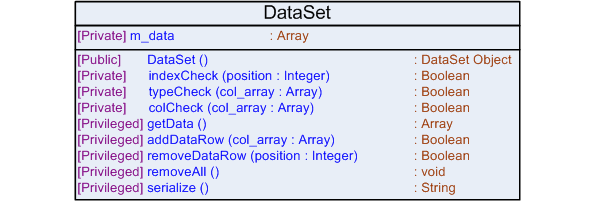

|

|
DataSet Widget Documentation
|
The DataSet widget was designed in JavaScript and attempts to provide a simple,
reusable mechanism for storing a set of tabular information generically.
The goal of the widget was to serve as a primitive data structure from which data could be extracted and mapped to any type of more complex structure. For example, the data that is presented in the Dashboard and SortableTable widgets translates its data from a DataSet object. If the SortableTable accpeted a format such as XML, either it would have to parse the data according to a schema provided by the user or have a predefined schema (and would have to be translated to this format at some point in time). This process could result in greater overhead due to the need to parse and translate XML and rebuild a DOM structure. Internally, the widget stores the data as a JavaScript array of arrays. Each element of the array represents a row of data and each array contained within the first array represents the columns of data contained within a row. The only additional restriction on this is that each row must have the same number of columns. It is possible to put any type of data into the DataSet, however, it is recommended to use text content for optimum performance and to minimize errors. |
Look and Feel
Not Applicable - This widget has no visual components to be rendered.
Logical Diagram
Not Applicable - This widget has no dependencies on other widgets or code modules.
Include Mechanism
To use this JavaScript class in a Web-page, please add the HTML script tag with the appropriate attributes to the HEAD section of the HTML document. The path listed assumes that the file is located in the same directory as the HTML Web-page on which this widget will be used (although the include can be made in the BODY of the HTML document it is recommended to place it in the HEAD section to reduce load times).
<html>
<head>
<script type=“text/javascript” src=“./class.dataset.js”></script>
</head>
<html>
Browser Compatibility
This widget has been tested, and is supported on the following browsers:
- Firefox 1.5.x
- Firefox 2.0.x
- Internet Explorer 6
- Internet Explorer 7
HTML Structure
Not Applicable - This widget has no visual components to be rendered.
Class Diagram
Class Documentation
- Attributes:
- Methods:
Attributes
m_data
The tabular data stored in a JavaScript array format
Methods
DataSet ()
Construct a DataSet object as a tabular set of data by appending rows of data
to the set
Notes:
DataSet Constructor
indexCheck (position)
Ensures that a row exists in the DataSet at the specified index
(zero-based)
Parameters:
position - an integer value that indicates the row to
look for
Returns:
boolean
Notes:
Helper function
typeCheck (col_array)
Ensures that an Array data type has been passed in
Parameters:
col_array - an array of column data to form a single
row
Returns:
boolean
Notes:
Helper function
colCheck (col_array)
Ensures that all rows of the data set have the same number of
columns
Parameters:
col_array - an array of column data to form a single
row
Returns:
boolean
Notes:
Helper function
getData ()
Provides access to the actual data
Returns:
m_data
addDataRow (col_array)
Adds a new row of data to the DataSet
Parameters:
col_array - an array of column data to form a single
row
Returns:
boolean - true on successful add; false otherwise
removeDataRow (position)
Removes the specified row of data from the DataSet
Parameters:
position - an integer indicating the row to remove
(zero-based)
Returns:
boolean - true on successful removal; false otherwise
removeAll ()
Removes all data from the DataSet
Returns:
void
serialize ()
Returns the DataSet as a string
Returns:
String - a string-based representation of the DataSet
Example Usage
The examples to follow are designed to serve as a simple walkthrough on how you would add the DataSet widget to a Web-page. Each example is designed to build on those before it, and therefore, the final example will show the overall picture regarding instantiating, building, and displaying, the DataSet widget correctly. While it is not necessary to follow each step exactly, this will provide a general idea on how it works.
Example 1 - Hooking it up
The DataSet is designed to be an underyling storage mechanism or data structure. Therefore, it is not designed to display data, only organize data in a generic format so that presentation is simplified. An HTML hook or placeholder is needed to hold the data rather than a widget. "div" tags serve as great hooks, since they can be placed within almost any type of tag, and similarly, can contain almost any tag.
<html>
<head>
<script type=“text/javascript” src=“./class.dataset.js”></script>
</head>
<body>
<div id=“data_hook”></div>
</body>
<html>
Example 2 - Creating the DataSet
To create the DataSet, as in other object-oriented programming languages, the constructor must be called along with the use of the keyword new.
<html>
<head>
<script type=“text/javascript” src=“./class.dataset.js”></script>
<script type=“text/javascript”>
var widget = null;
function init()
{
widget = new DataSet();
}
</script>
</head>
<body onload=“init()”>
<div id=“data_hook”></div>
</body>
<html>
Example 3 - Assembling and Adding Data
Some JavaScript must be used in order to add rows and columns of data to the DataSet. Each row of data must have the same number of columns, therefore, if an empty column is needed, use an empty string. The DataSet can accept any type of data stored in a row. Therefore, it is possible to not only pass in text, but HTML (as a string) as well. For this sample, hardcoded strings will be used as data, however, if an XML document was present for example, you would have to parse and extract particular data fields using XML DOM and would then add them to the DataSet. Please see the class diagram and documentation to determine what methods are available for use.
<html>
<head>
<script type=“text/javascript” src=“./class.dataset.js”></script>
<script type=“text/javascript”>
var widget = null;
function init()
{
widget = new DataSet();
data.addDataRow(['<b style=“color:red”>row 0_col 0</b>', '']);
data.addDataRow(['row 1_col 0', 'row 1_col 1']);
data.addDataRow(['', '<b style=“color:blue”>row 2_col 1</b>']);
}
</script>
</head>
<body onload=“init()”>
<div id=“data_hook”></div>
</body>
<html>
Example 4 - Displaying the DataSet
To extract the data call the getData() method and iterate through the data to display it, or call the serialize() method. The DataSet is designed to be a data structure not a method to display data.
<html>
<head>
<script type=“text/javascript” src=“./class.dataset.js”></script>
<script type=“text/javascript”>
var widget = null;
function init()
{
widget = new DataSet();
data.addDataRow(['<b style=“color:red”>row 0_col 0</b>', '']);
data.addDataRow(['row 1_col 0', 'row 1_col 1']);
data.addDataRow(['', '<b style=“color:blue”>row 2_col 1</b>']);
var hook = document.getElementById('data_hook');
hook.innerHTML = '<p>' + data.serialize() + '</p>';
}
</script>
</head>
<body onload=“init()”>
<div id=“data_hook”></div>
</body>
<html>
Special Notes
- Theoretically, any type of data can be placed into the columns of data, however, it is designed for text or basic HTML data.
- Ideally, use the other widgets that accept DataSet objects to make full use of this data structure.
- Ensure that HTML inserted into the DataSet does not contain HTML events. The events must be removed manually to prevent memory leaks.
Lessons Learned
The goal of this widget was to provide a generic mechanism of converting and storing any form of data (for example, HTML or XML) into a single type of structure so that it could be used by any of the widgets. In terms of this, the widget succeeded, however, scalability might become an issue in the future. A more sophisticated structure should be developed and integrated into other widgets before they become too complex.
© Copyright IBM Corp. 2007. All rights reserved.
IBM®, the IBM logo, DB2®, AIX®, and pureXML™ are
registered trademarks of International Business Machines Corporation in the
United States, other countries, or both.
Zend and Zend Core are registered trademarks of Zend Technologies Limited,
in the United States, other countries, or both.
Mozilla® and Firefox® are registered trademarks of the Mozilla Foundation in the
United States and other countries.
Microsoft, Windows, Windows NT, Internet Explorer®, and the Windows logo are
trademarks of Microsoft Corporation in the United States, other countries, or
both.
Linux is a registered trademark of Linus Torvalds in the United
States, other countries, or both.
Other company, product, or service names
may be trademarks or service marks of others.